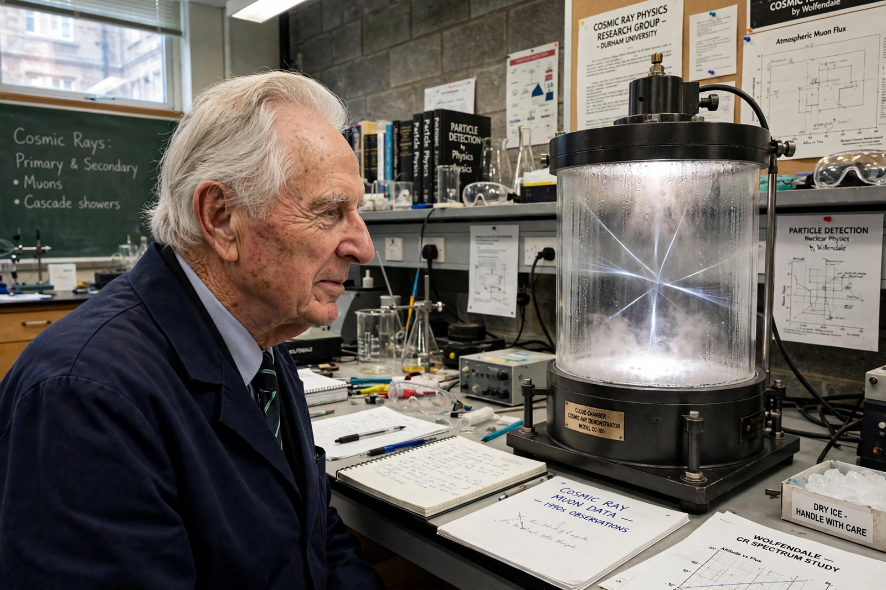

| Sir Arnold Wolfendale | |
|---|---|
| Born | 25 June 1927, Rugby, Warwickshire, England |
| Office | 14th Astronomer Royal (1991–1995) |
| Known for | Cosmic-ray physics; gamma-ray astronomy |
| Education | University of Manchester (BSc, PhD) |
| Employer | Durham University (professor) |

Sir Arnold Whittaker Wolfendale (born 25 June 1927) is a British astronomer and cosmic-ray physicist who served as the fourteenth Astronomer Royal from 1991 to 1995. Educated at the University of Manchester, where he worked in the tradition of Patrick Blackett's cosmic-ray group, he moved to Durham University in 1956 and built its physics department into a leading centre for cosmic-ray and gamma-ray astronomy.
Wolfendale's group studied the cosmic-ray energy spectrum and its "knee", and sought gamma-ray evidence bearing on the origin of cosmic rays and the structure of the Galaxy, reporting early evidence that cosmic rays are predominantly galactic in origin. He also took a prominent public role in debates about the funding and organisation of British astronomy, and in later years publicly questioned aspects of climate-change consensus, drawing controversy.
He succeeded Francis Graham-Smith as Astronomer Royal in 1991 and was in turn succeeded in 1995 by Martin Rees. The post had previously been held by Martin Ryle (1972–1982). In 2025 the title passed for the first time to a woman, Michele Dougherty, the sixteenth holder.